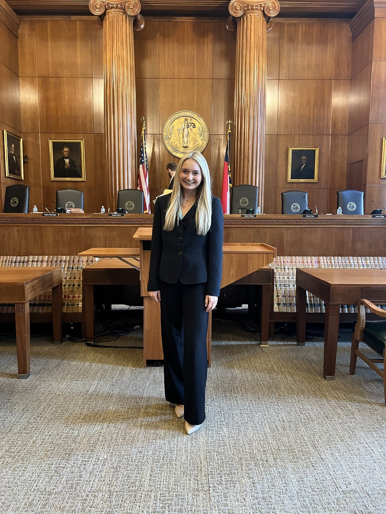

Peyton Sharp: From ABM to the North Carolina Supreme Court

Peyton is an ABM senior who spent last spring working at the state's highest court. She got there by asking. We asked her eight questions.
What's your major and year, and where are you from?
I'm a senior majoring in Agricultural Business Management with a minor in Agricultural Entrepreneurship. I'm from Clayton, North Carolina, and I plan to graduate in May 2027. After graduation, I hope to attend law school and pursue a career in the legal field.
What was your Supreme Court internship, and what did you do?
During the spring 2026 semester, I interned in Justice Trey Allen's chambers at the Supreme Court of North Carolina. I worked alongside Justice Allen and his law clerks. My responsibilities included writing petitions for discretionary review, analyzing legal arguments, researching cases, and preparing summaries and memoranda for the chambers. I also attended oral arguments and watched how the justices approached complex legal issues. It gave me a much deeper understanding of the judicial system and reinforced my desire to pursue a legal career.
How did you find it, and what was the application process?
I came across a LinkedIn post about internship opportunities at the Supreme Court of North Carolina. After seeing it, I reached out to each of the justices personally to express my interest and ask whether they had opportunities in their chambers.
I submitted a writing sample and my transcript, then interviewed. They asked about my educational background, my interest in the legal field, and why I wanted this opportunity. After the interview, I was offered an internship in Justice Allen's chambers.
One of my biggest takeaways: never be afraid to reach out and ask about opportunities. Taking the initiative can open doors you never expected.
What have you done in college that helped prepare you?
Majoring in Agricultural Business Management has strengthened my critical thinking, analytical, and problem-solving skills, all of which matter in the legal field. My coursework has challenged me to evaluate complicated issues from multiple perspectives and communicate my reasoning clearly.
Outside the classroom, I'm social chair of the Agricultural Business Management Club. I've also worked in leasing and marketing at The Station Raleigh, which built my professionalism, communication skills, and ability to work with all kinds of people. Balancing academics, leadership, and a job taught me time management, accountability, and the value of stepping outside my comfort zone.
Who helped you along the way?
My parents, Patty and Scooter Sharp, have always encouraged me to pursue my goals, even when they seemed ambitious or outside my comfort zone. They've reminded me to believe in myself and take every opportunity that comes my way.
Dr. Best at NC State has also played an important role. Having a professor who believes in your potential and encourages you to pursue opportunities beyond the classroom makes a tremendous difference. His guidance and support have meant so much to me.
What would you tell a student who thinks, "I'm probably not qualified"?
Apply anyway. When I began pursuing law, I knew I didn't have the background many people expect. My major is in agriculture, not political science or pre-law, but that didn't mean I couldn't succeed in a legal environment.
You do not have to know everything or have the perfect resume to be deserving of an opportunity. Internships are meant to help you learn and grow. I walked into the Supreme Court knowing I had so much to learn, and I walked away with knowledge and experiences I never could have gained in a classroom. Never let the fear of rejection keep you from pursuing something that could change your future.
What's one thing students can do now to prepare?
Start building relationships and putting yourself out there. Get to know your professors, ask questions, attend events, and express interest in opportunities even if they're outside your major. You never know which conversation might open a door.
Take your writing and communication skills seriously. During my internship I quickly realized how important it is to analyze information, communicate clearly, and pay attention to detail. You can build those skills in almost any class or job. And don't wait until you feel completely prepared. Sometimes the best way to prepare is to take the first step.
What are your plans after graduation?
I plan to attend law school and become an attorney. I'm waiting to hear back from my top choice, the University of Georgia. I'm especially interested in corporate and intellectual property law, though I'm excited to keep exploring different areas of the profession.
The internship confirmed that law is the path I want. Watching the judicial process firsthand and contributing to real legal research showed me how much work goes into the profession, and how much there is to learn. That genuinely excites me, and it's given me confidence in the path I've chosen.